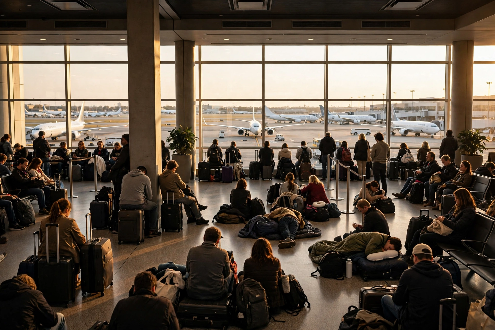

Ohio Family Misses Cruise After FAA Grounds Every Flight in America
A Findlay family spent Friday at Columbus airport watching their Caribbean vacation sail away without them — literally.

What actually happened
The Federal Aviation Administration grounded all flights nationwide on Friday afternoon, Nov. 13, 2026, for just the second time since the 9/11 attacks — the first nationwide stop since January 2023, when a key FAA computer system malfunctioned. Officials cited "extraordinary circumstances" caused by communications problems at the 22 regional air traffic control centers that direct planes en route between airports.
The ground stop lasted more than four hours and was lifted at about 8:15 p.m. Eastern, allowing departures to resume gradually. The nation's top homeland security official attributed the problem to a telecommunications outage and said there was no indication it was related to a cyberattack. Transportation Secretary Sean Duffy said new technology being added to the air traffic control system had overloaded antiquated equipment, and that a contractor replacing old copper wire with new fiber wire had somehow caused the overload.
The disruption was profound: nearly 5,000 flights were canceled on Friday according to FlightAware, with nearly 10,000 delayed, and at least 827 flights diverted. More than 2,500 more flights were canceled on Saturday as airlines worked to recover, with planes and crews out of position. Some 11,000 flights carrying more than 1.5 million passengers had been scheduled to take off after 4 p.m. Eastern on Friday alone. The FAA said air travel should be back to normal by the end of Sunday.
Based on Associated Press reporting, 2026-11-13. Read the real story.
Meanwhile, in Ohio
FINDLAY, Ohio — Dan and Melissa Hartman did everything right. They left Findlay at dawn on Friday, made it to John Glenn Columbus International Airport with two hours to spare, and had the cooler, the sunscreen, and the matching family T-shirts all packed for a seven-night Caribbean cruise out of Port Canaveral on Saturday morning. Their flight to Orlando was supposed to leave at 3:40 p.m. It never left at all.
"We watched the board go from 'delayed' to 'delayed' to just... nothing," Dan said, sitting on his suitcase near Gate C-14 with a half-eaten bag of Buckeyes. "I've sat through Ohio State-Michigan weather delays, I've sat through a three-hour rain delay at a Mud Hens game, but I have never sat in an airport while the entire country was told not to fly." By 8:15 p.m., when the FAA finally lifted the ground stop, the Hartmans' rebooking options were Saturday flights that landed in Orlando hours after their ship had already sailed.
The kids, Emma, 12, and Jack, 9, took it about as well as could be expected, which is to say Jack has now declared himself "done with cruising forever" and Emma has already started a spreadsheet ranking alternate vacations. Melissa, meanwhile, spent Friday night on hold with the cruise line, the airline, and — briefly, and by accident — a bait shop in Port Clinton. The family is now weighing a drive to Florida to catch the ship at its next port, a plan Dan describes as "17 hours in the minivan, which honestly sounds relaxing compared to today," and Melissa describes as "absolutely not happening." Back in Findlay, a neighbor is still watching their dog, Biscuit, who, the Hartmans note, is the only member of the family currently on vacation as planned.
“We could have driven to Florida in the time we sat at CMH. I did the math. Twice.”
— Dan Hartman, Findlay
“I packed for a cruise. I did not pack for an overnight in the Columbus airport with two kids and a cooler full of rapidly warming string cheese.”
— Melissa Hartman, Findlay
Parody: the Hartman family of Findlay is fictional. The FAA ground stop, the cancellations, and the delays above are real, as reported by the Associated Press on Nov. 13-14, 2026.